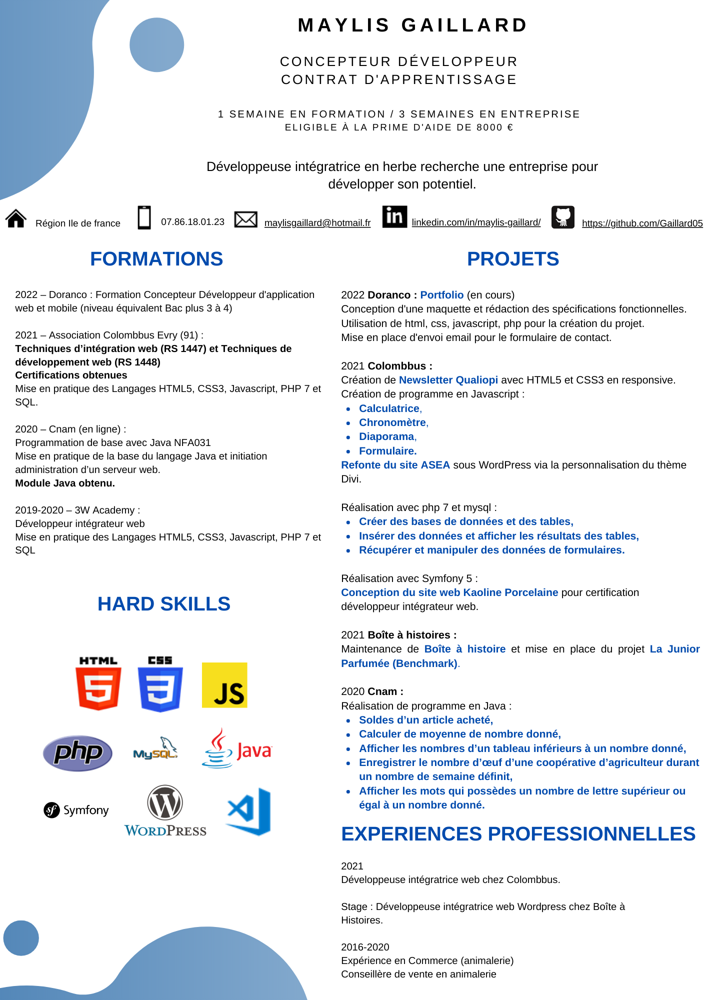

Colombbus
Cette association aide à l'insertion des demandeurs d'emplois en les formant dans le domaine du web
Je suis Maylis Gaillard Développeuse Web* Junior. J'ai une appétence pour l'informatique et les animaux
Pour en savoir plus sur mon parcours et expérience professionnelle cliquez sur mon cv


Cette association aide à l'insertion des demandeurs d'emplois en les formant dans le domaine du web
J'ai réalisé dans le cadre de mes fonctions une refonte de site web avec le CMS* Wordpresse via le thème Divi*.
J'ai pu maintenir un site web via Wordpress et mettre en place le projet La Junior Parfumée dans le cadre de ma formation.
Conception d'un site web avec le framework* Symfony 5 pour une micro entreprise dans le cadre de ma soutenance pour obtenir mes deux certificats professionnels.
*CMS: C'est un logiciel qui permet de créer de A à Z un site web grâce à des thèmes proposé par celui-ci.
*Divi: C'est un éditeur de site web qui permet de créer et modifier un site web sans utiliser de codage informatique, ni de connaissances en programmation web.
*Framework: C'est un outil de développement qui permet de faciliter la création d'un site web. Il permet d'uniformiser le codage des développeurs, il faut avoir des connaissances en codage pour son utilisation.
Vous pouvez aussi les trouver sur mon compte github

Un projet, une question n'hésitez pas à me contacter. Je vous répondrai dans les meilleurs délais